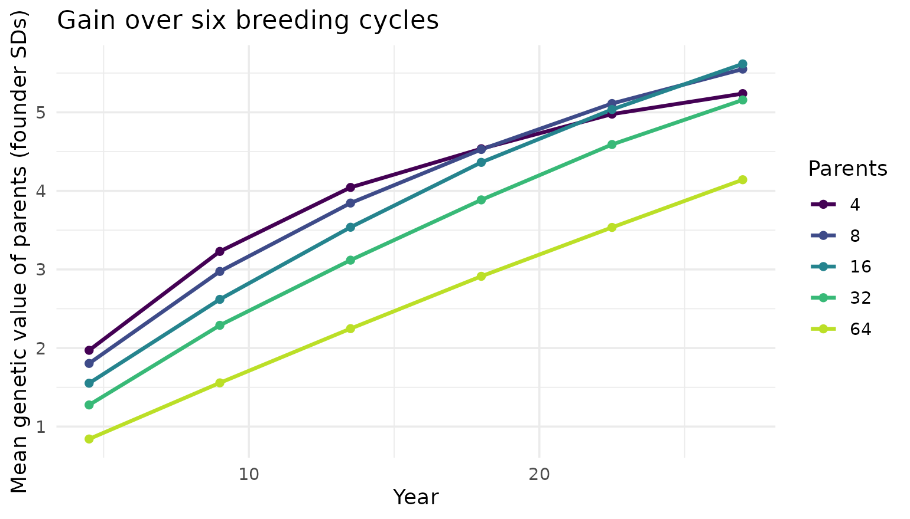
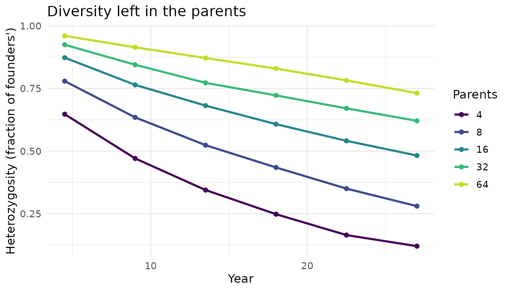
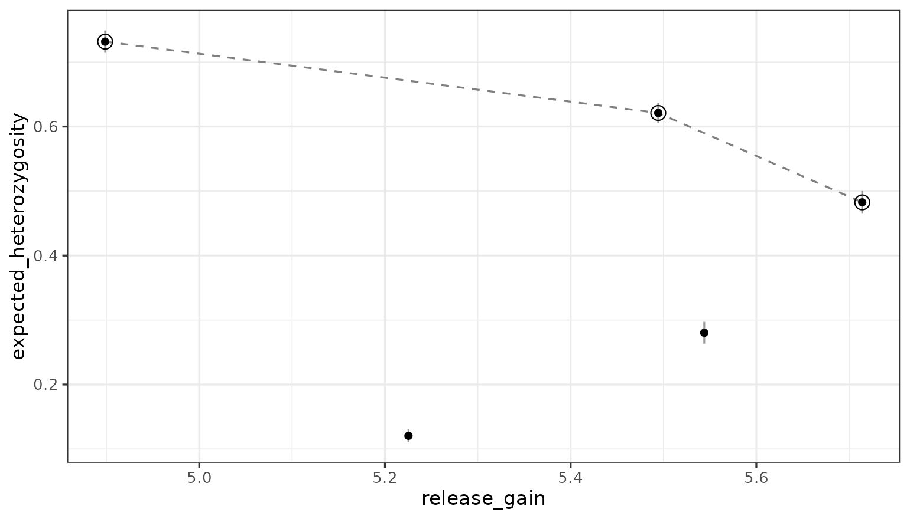

Selection intensity versus diversity
Source:vignettes/articles/intensity-diversity.Rmd
intensity-diversity.RmdEvery cycle, a breeder decides how many lines to recycle as parents. Using only the very best lines gives the most gain next cycle. It also narrows the genetic base, and a narrow base has less variance to select on in the cycles after that. This trade-off between short-term gain and long-term potential has no single right answer. The best choice depends on your horizon, and on how much diversity you are willing to spend.
This article measures the trade-off for a line pipeline and shows how a Pareto front turns it into a menu of good options.
The study
We use line_pipeline(), run for six cycles, and vary the
number of parents recycled from the advanced yield trial:
pipeline <- line_pipeline(
n_parents = tune(),
n_crosses = 30, progeny_per_cross = 15, n_ayt = 80, cycles = 6,
founders = asr_founders(n_chr = 10, seg_sites = 100)
)
metrics <- sim_metric_set(release_gain, genetic_variance, expected_heterozygosity, gain_per_year)
res <- tune_grid(
pipeline,
resamples = sim_replicates(15, seed = 1),
grid = data.frame(n_parents = c(4, 8, 16, 32, 64)),
metrics = metrics,
control = control_sim(save_outcomes = TRUE)
)Gain over time
traj <- collect_trajectories(res)
avg <- aggregate(cbind(mean, heterozygosity) ~ n_parents + year, data = traj, FUN = mean)
ggplot(avg, aes(year, mean, colour = factor(n_parents))) +
geom_line(linewidth = 1) + geom_point() +
scale_colour_viridis_d(end = 0.9) +
labs(x = "Year", y = "Mean genetic value of parents (founder SDs)", colour = "Parents",
title = "Gain over six breeding cycles")
ggplot(avg, aes(year, heterozygosity, colour = factor(n_parents))) +
geom_line(linewidth = 1) + geom_point() +
scale_colour_viridis_d(end = 0.9) +
labs(x = "Year", y = "Heterozygosity (fraction of founders')", colour = "Parents",
title = "Diversity left in the parents")
Few parents spend diversity fast. Expected heterozygosity is the chance two alleles drawn at random from the parents differ, and it falls each cycle in proportion to how few parents there are. Within six cycles this already costs gain. Four parents lead for the first three cycles, then 8 and 16 parents pass them, and 16 finish highest. Sixty-four parents keep the most diversity but select too weakly to keep up.
The menu: a Pareto front
collect_metrics(res, type = "wide")[, c("n_parents", "release_gain", "release_gain_se",
"expected_heterozygosity", "genetic_variance")]
#> # A tibble: 5 × 5
#> n_parents release_gain release_gain_se expected_heterozygos…¹ genetic_variance
#> <dbl> <dbl> <dbl> <dbl> <dbl>
#> 1 4 5.23 0.230 0.120 0.0490
#> 2 8 5.54 0.223 0.280 0.116
#> 3 16 5.71 0.168 0.482 0.129
#> 4 32 5.49 0.146 0.621 0.210
#> 5 64 4.90 0.177 0.732 0.349
#> # ℹ abbreviated name: ¹expected_heterozygosity
pareto_front(res, metrics = c("release_gain", "expected_heterozygosity"))
#> # A tibble: 3 × 6
#> n_parents release_gain release_gain_se expected_heterozygosity
#> <dbl> <dbl> <dbl> <dbl>
#> 1 64 4.90 0.177 0.732
#> 2 32 5.49 0.146 0.621
#> 3 16 5.71 0.168 0.482
#> # ℹ 2 more variables: expected_heterozygosity_se <dbl>, .config <chr>
Every design on the front is a defensible choice. Moving along it trades gain now for diversity later, at the exchange rate the plot shows. Designs off the front can be dropped: some other design does at least as well on both goals.
Choose with a diversity floor
If your program has a rule such as “keep at least 60% of the founders’ heterozygosity after six cycles”, make it a constraint and let the helpers pick the highest gain that respects it:
Going further
- Run longer horizons (
cycles = 15) to see the few-parent designs fall behind, as in Why simulate?. - Tune
n_parentsandn_crossestogether withtune_bayes(), under a heterozygosity constraint. - Replace truncation selection with optimal contribution selection
inside an
alphasim_program()of your own (for example with the optiSel package), and compare it with this pipeline in asim_set().